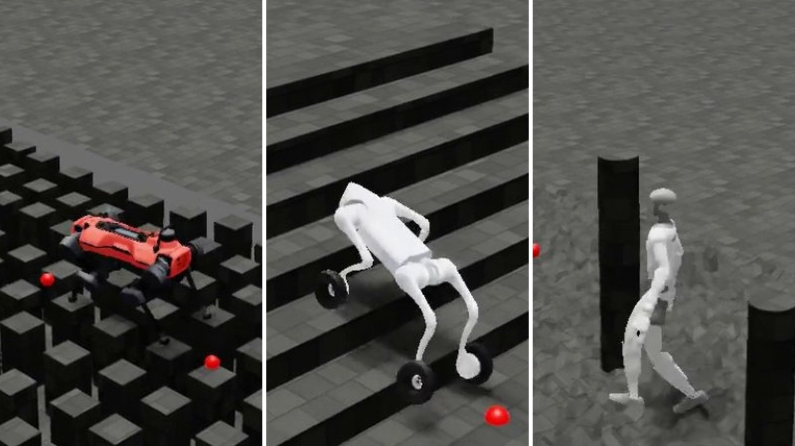
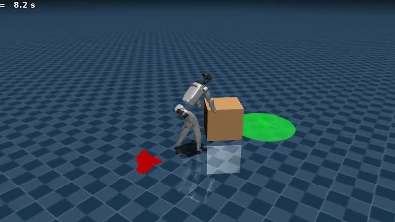
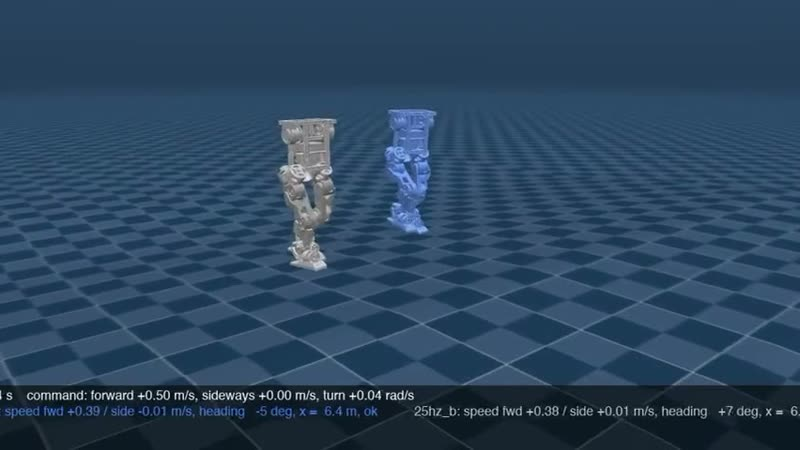
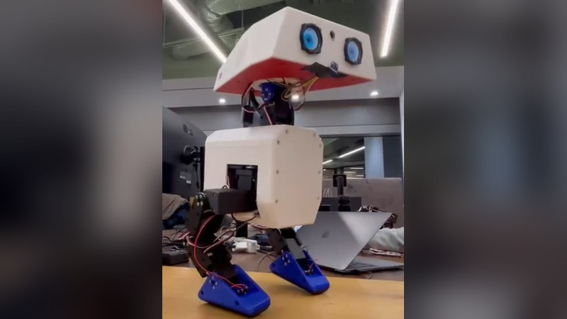
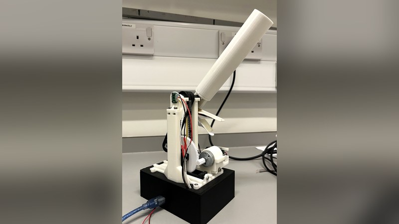
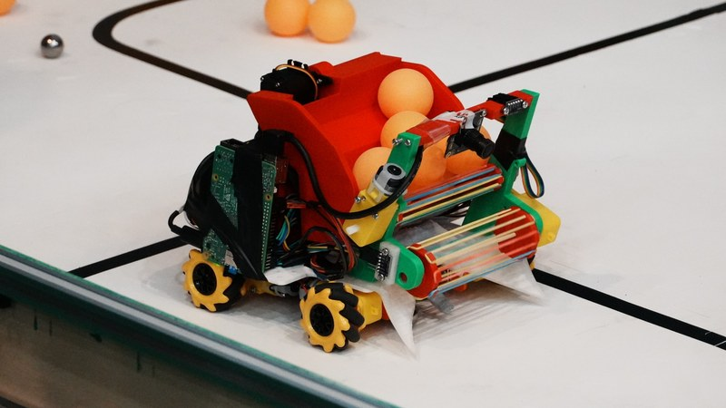
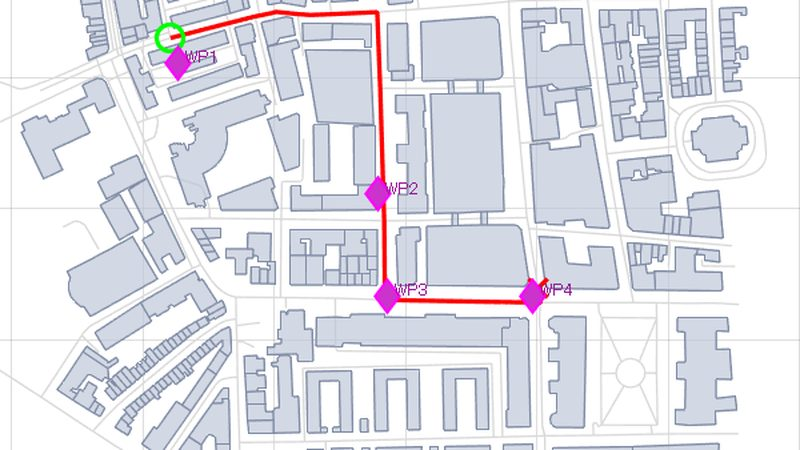

projects

Beyond Acrobotics
Extending generalist parkour to ANYmal D, Go2-W and G1, and to imperfect height maps.

Contact-planner-based humanoid object interaction
Master's thesis on object interaction with the Unitree G1, using a learned contact planner.

Oxford STRIDE
Building the Berkeley Humanoid Lite for research on locomotion and loco-manipulation, and supervising a RoboCup 3D simulation team.

Small bipedal robot
Electronics, calibration and interaction policies at Algomatic, including work on the Open Duck robot.

Haptic intubation trainer
A training device for tracheal intubation that simulates varied airway conditions.

Team OxBots
A vision-guided autonomous robot, placing 3rd of 36 at the Unibots UK National Finals.

PADS: multi-drone policing
Group project on drones that respond to burglaries in Westminster; I did station placement, MPC control and multi-drone coordination.